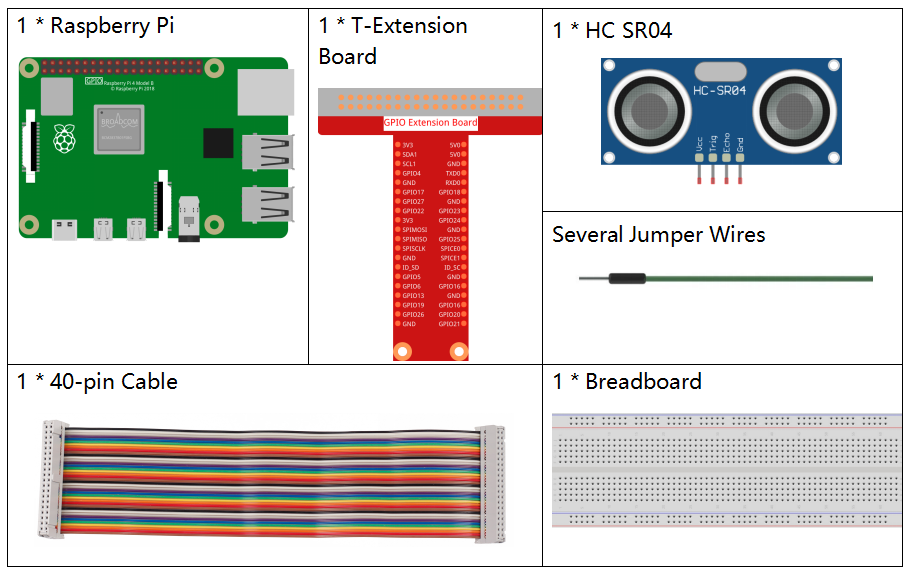
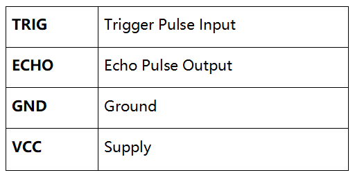
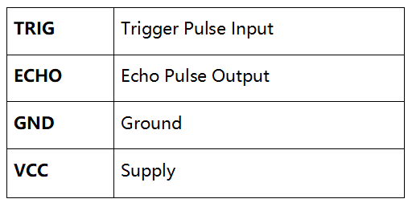
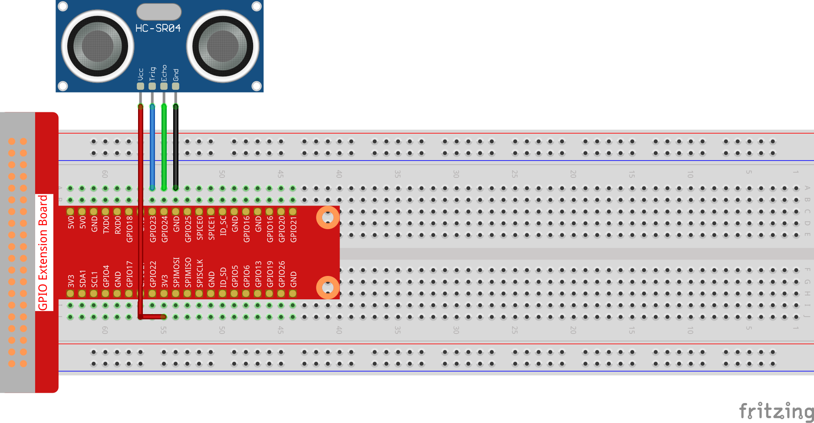

Note
Bonjour, bienvenue dans la communauté SunFounder Raspberry Pi & Arduino & ESP32 Enthusiasts sur Facebook ! Plongez plus profondément dans l’univers des Raspberry Pi, Arduino et ESP32 avec d’autres passionnés.
Pourquoi rejoindre ?
Support expert : Résolvez les problèmes après-vente et les défis techniques avec l’aide de notre communauté et de notre équipe.
Apprendre & Partager : Échangez des astuces et des tutoriels pour améliorer vos compétences.
Aperçus exclusifs : Accédez en avant-première aux annonces de nouveaux produits et aux aperçus exclusifs.
Réductions spéciales : Profitez de réductions exclusives sur nos nouveaux produits.
Promotions festives et concours : Participez à des concours et promotions pendant les fêtes.
👉 Prêt à explorer et créer avec nous ? Cliquez sur [Ici] et rejoignez-nous dès aujourd’hui !
2.2.5 Module de Capteur Ultrasonique
Introduction
Le capteur ultrasonique utilise les ultrasons pour détecter précisément les objets et mesurer les distances. Il émet des ondes ultrasoniques et les convertit en signaux électroniques.
Composants
Principe
Ultrason
Le module de télémétrie par ultrasons fournit une mesure sans contact de 2 cm à 400 cm, avec une précision pouvant atteindre 3 mm. Il assure un signal stable dans un rayon de 5 m, puis s’affaiblit progressivement après cette distance, jusqu’à disparaître vers 7 m.
Le module comprend des émetteurs ultrasoniques, un récepteur et un circuit de commande. Les principes de base sont les suivants :
Utilisez un basculement d’IO pour traiter un signal de niveau haut d’au moins 10 µs.
2. Le module envoie automatiquement huit cycles de 40 kHz et détecte si un signal de retour est reçu sous forme d’impulsion. 3. Si un signal est renvoyé, le temps de niveau haut de la sortie IO correspond à la durée entre l’émission de l’onde ultrasonique et sa réception. Ici, la distance de test = (temps haut x vitesse du son (340 m/s)) / 2.
 

{kind=link}
Le diagramme de synchronisation est illustré ci-dessous. Il suffit de fournir une impulsion courte de 10 µs pour déclencher l’entrée de la mesure, et le module enverra alors une rafale de 8 cycles d’ultrasons à 40 kHz et attendra l’écho. Vous pouvez calculer la distance en mesurant le temps écoulé entre l’envoi du signal de déclenchement et la réception du signal d’écho.
Formule : µs / 58 = centimètres ou µs / 148 = pouces ; ou : la distance = temps de niveau haut * vitesse (340 M/S) / 2. Il est recommandé d’utiliser un cycle de mesure supérieur à 60 ms pour éviter les collisions entre le signal de déclenchement et le signal d’écho.

Schéma

Procédures expérimentales
Étape 1 : Construisez le circuit.
{kind=link}
Pour les utilisateurs de C
Étape 2 : Accédez au dossier contenant le code.
cd ~/davinci-kit-for-raspberry-pi/c/2.2.5/
Étape 3 : Compilez le code.
gcc 2.2.5_Ultrasonic.c -lwiringPi
Étape 4 : Exécutez le fichier exécutable.
sudo ./a.out
Une fois le code exécuté, le module de capteur ultrasonique détectera la distance entre l’obstacle devant lui et le module, puis affichera la distance sur l’écran.
Note
Si cela ne fonctionne pas après l’exécution ou si un message d’erreur apparaît : "wiringPi.h: Fichier ou répertoire introuvable », veuillez vous référer à C code is not working?.
Code
#include <wiringPi.h>
#include <stdio.h>
#include <sys/time.h>
#define Trig 4
#define Echo 5
void ultraInit(void)
{
pinMode(Echo, INPUT);
pinMode(Trig, OUTPUT);
}
float disMeasure(void)
{
struct timeval tv1;
struct timeval tv2;
long time1, time2;
float dis;
digitalWrite(Trig, LOW);
delayMicroseconds(2);
digitalWrite(Trig, HIGH);
delayMicroseconds(10);
digitalWrite(Trig, LOW);
while(!(digitalRead(Echo) == 1));
gettimeofday(&tv1, NULL);
while(!(digitalRead(Echo) == 0));
gettimeofday(&tv2, NULL);
time1 = tv1.tv_sec * 1000000 + tv1.tv_usec;
time2 = tv2.tv_sec * 1000000 + tv2.tv_usec;
dis = (float)(time2 - time1) / 1000000 * 34000 / 2;
return dis;
}
int main(void)
{
float dis;
if(wiringPiSetup() == -1){ // Si l'initialisation de wiringPi échoue, afficher un message à l'écran
printf("setup wiringPi failed !");
return 1;
}
ultraInit();
while(1){
dis = disMeasure();
printf("%0.2f cm\n\n",dis);
delay(300);
}
return 0;
}
Explication du Code
void ultraInit(void)
{
pinMode(Echo, INPUT);
pinMode(Trig, OUTPUT);
}
Initialise les broches du capteur ultrasonique ; Echo est configuré en entrée, Trig en sortie.
float disMeasure(void){};
Cette fonction permet de réaliser la mesure de distance à l’aide du capteur ultrasonique en calculant la distance de détection retournée.
struct timeval tv1;
struct timeval tv2;
La structure timeval est utilisée pour stocker l’heure actuelle. La structure complète est la suivante :
struct timeval
{
__time_t tv_sec; /* Secondes. */
__suseconds_t tv_usec; /* Microsecondes. */
};
Ici, tv_sec représente les secondes écoulées depuis Epoch lors de la création de struct timeval. Tv_usec représente les microsecondes ou une fraction de secondes.
digitalWrite(Trig, HIGH);
delayMicroseconds(10);
digitalWrite(Trig, LOW);
Un pulse ultrasonique de 10 microsecondes est envoyé.
while(!(digitalRead(Echo) == 1));
gettimeofday(&tv1, NULL);
Cette boucle vide garantit qu’aucun signal d’écho parasite n’est présent avant l’envoi du signal de déclenchement et permet ensuite de récupérer l’heure actuelle.
while(!(digitalRead(Echo) == 0));
gettimeofday(&tv2, NULL);
Cette boucle vide garantit que la prochaine étape ne sera effectuée qu’après la réception du signal d’écho, puis l’heure actuelle est à nouveau récupérée.
time1 = tv1.tv_sec * 1000000 + tv1.tv_usec;
time2 = tv2.tv_sec * 1000000 + tv2.tv_usec;
Convertit le temps stocké par la structure timeval en microsecondes complètes.
dis = (float)(time2 - time1) / 1000000 * 34000 / 2;
La distance est calculée à partir de l’intervalle de temps et de la vitesse de propagation du son. La vitesse du son dans l’air est de 34000 cm/s.
Pour les utilisateurs Python
Étape 2 : Accédez au dossier contenant le code.
cd ~/davinci-kit-for-raspberry-pi/python/
Étape 3 : Exécutez le fichier exécutable.
sudo python3 2.2.5_Ultrasonic.py
Une fois le code exécuté, le module de capteur ultrasonique détecte la distance entre l’obstacle devant lui et le module, puis la valeur de la distance sera affichée à l’écran. Code
Note
Vous pouvez Modifier/Réinitialiser/Copier/Exécuter/Arrêter le code ci-dessous.
Mais avant cela, vous devez vous rendre dans le chemin source du code tel que davinci-kit-for-raspberry-pi/python.
import RPi.GPIO as GPIO
import time
TRIG = 16
ECHO = 18
def setup():
GPIO.setmode(GPIO.BOARD)
GPIO.setup(TRIG, GPIO.OUT)
GPIO.setup(ECHO, GPIO.IN)
def distance():
GPIO.output(TRIG, 0)
time.sleep(0.000002)
GPIO.output(TRIG, 1)
time.sleep(0.00001)
GPIO.output(TRIG, 0)
while GPIO.input(ECHO) == 0:
a = 0
time1 = time.time()
while GPIO.input(ECHO) == 1:
a = 1
time2 = time.time()
during = time2 - time1
return during * 340 / 2 * 100
def loop():
while True:
dis = distance()
print ('Distance: %.2f' % dis)
time.sleep(0.3)
def destroy():
GPIO.cleanup()
if __name__ == "__main__":
setup()
try:
loop()
except KeyboardInterrupt:
destroy()
Explication du Code
def distance():
Cette fonction est utilisée pour réaliser la fonction du capteur ultrasonique en calculant la distance de détection retournée.
GPIO.output(TRIG, 1)
time.sleep(0.00001)
GPIO.output(TRIG, 0)
Ceci envoie une impulsion ultrasonique de 10 µs.
while GPIO.input(ECHO) == 0:
a = 0
time1 = time.time()
Cette boucle vide garantit qu’aucun signal d’écho parasite n’est présent avant l’envoi du signal de déclenchement, puis permet d’obtenir l’heure actuelle.
while GPIO.input(ECHO) == 1:
a = 1
time2 = time.time()
Cette boucle vide garantit que la prochaine étape ne sera effectuée qu’après la réception du signal d’écho, puis l’heure actuelle est à nouveau récupérée.
during = time2 - time1
Effectuer le calcul de l’intervalle.
return during * 340 / 2 * 100
La distance est calculée en fonction de l’intervalle de temps et de la vitesse de propagation du son. La vitesse du son dans l’air : 340 m/s.
Photo du Phénomène